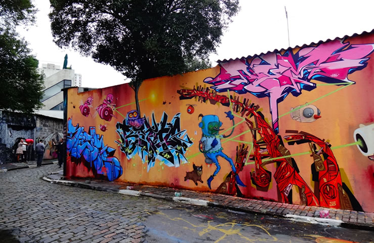
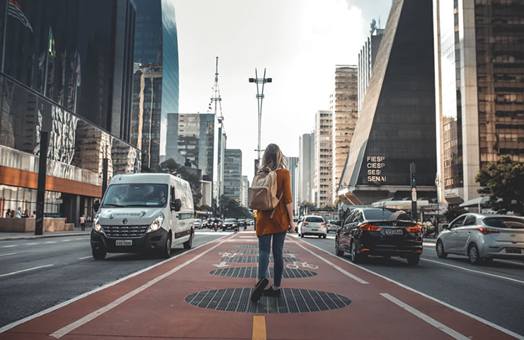

Museu de Arte de São Paulo (MASP)

O Museu de Arte de São Paulo Assis Chateaubriand ou popularmente conhecido como MASP é uma das instituições culturais mais importantes do Brasil.Localizado no coração de São Paulo, é símbolo da capital paulista e referência arquitetônica.Fundado em 1947, o museu possui um acervo de 10 mil obras, porém nem todas já foram expostas no MASP, como uma armadura de cobre e aço de 1480.Para se ter uma noção do tamanho da importância do MASP para a arte mundial, o museu é uma das quatro instituições do mundo todo que possui uma coleção completa de Edgar Degas. Trata-se de 73 esculturas de bronze.
Parque Ibirapuera

O Parque Ibirapuera é um dos mais famosos da capital paulista. Considerado o quintal dos paulistanos, encanta pela natureza e pela variedade de atrações gratuitas.O local é perfeito para andar de bicicleta, skate, correr ou fazer um piquenique. O visitante ainda têm opções de passeios, como o Museu de Arte Moderna, Museu Afro Brasil e a Fundação Bienal.
Beco do Batman
São Paulo também é conhecida pela sua arte de rua, que invade os muros com suas cores e manifestações.Os grafites e pinturas estão por toda a cidade, mas no Beco do Batman há uma concentração maior deles.Se você curte os diferentes traços coloridos que falam por si só, esse é o local perfeito. Ah, o local rende muitas fotos!
Avenida Paulista
A Avenida Paulista é o local que melhor define a diversidade cultural de São Paulo. Você precisa fazer uma caminhada por lá!Alugue uma bike e se perca (no bom sentido) pela principal avenida de uma das maiores cidades do mundo.Se for sua primeira vez na cidade, não tenha pressa! Aproveite a Paulista de ponta a ponta e entre no clima da capital.A avenida oferece diversas atrações. Lá você encontra o MASP, espaços como Itaú Cultural, Japan House, Centro Cultural Fiesp e Conjunto Nacional.